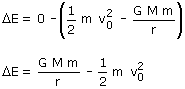
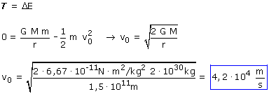
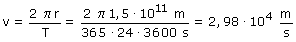

Supongo que se pregunta la velocidad que debería tener la Tierra para que el Sol no pudiera retenerla en órbita y se alejara hasta el infinito deteniéndose allí. Es decir piden la velocidad de escape para un cuerpo situado a 1.5·1011 m del Sol
En el dibujo se representa un recorrido rectilíneo hasta el infinito pero es una licencia poética, en realidad la trayectoria sería una parábola. La ventaja del campo conservativo es que no importa la trayectoria seguida solo cuentan el punto de partida y el de llegada
Cambios de energía mecánica
 |

Cálculo del trabajo
Durante el trayecto el cuerpo sólo está sometido a la fuerza la gravitatoria cuyo trabajo ya está con-tado en la variación de energía potencial, por tanto T = 0.
Aplicando el principio de conservación:

Por curiosidad veamos la velocidad orbital de la Tierra:

Podemos respirar tranquilos, que no nos escapamos del Sol...